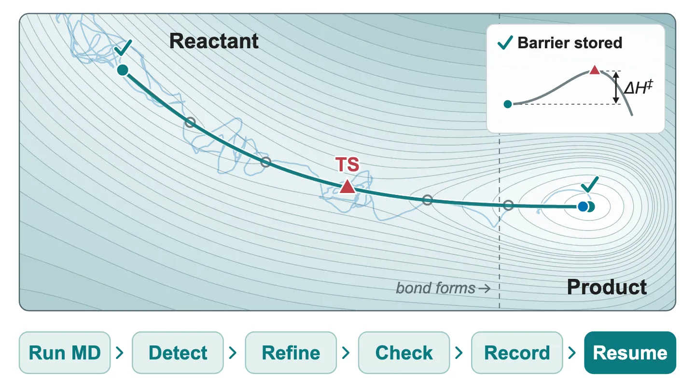
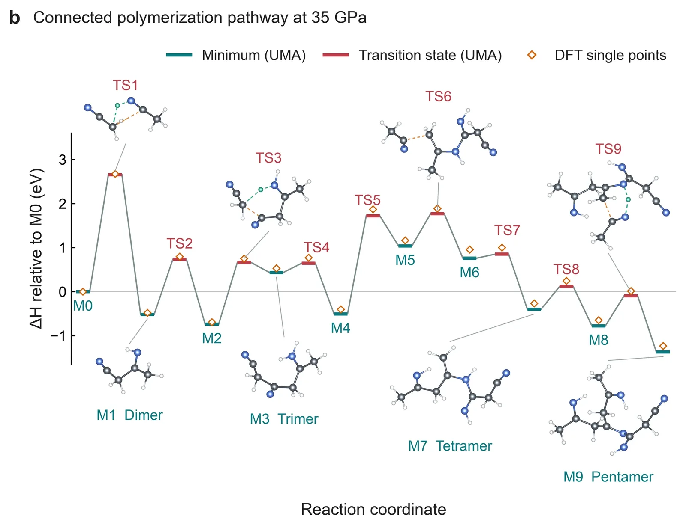
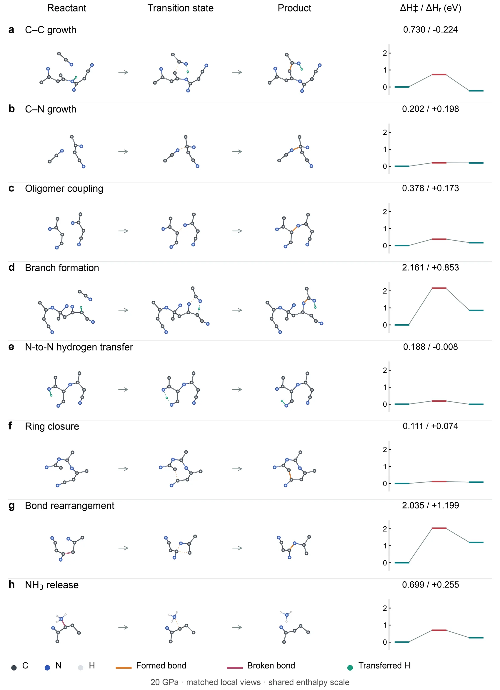
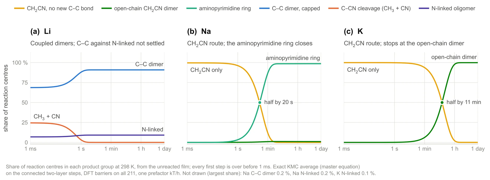

What I’m working on now
At Oak Ridge National Laboratory I study how pressure, a solvent or a metal surface changes the reactions a molecule takes. The molecule is acetonitrile, and most of this is still in progress.
The question
Heat pushes a reaction over its barrier. Pressure, a solvent, a catalyst or a plasma can do more: they reshape the energy landscape, and may open paths that heating alone does not reach. I work in a project at Oak Ridge, led by Ilia Ivanov, that asks how they do it.
Acetonitrile is the first test system. It forms chains, rings and polymers under very different conditions, and it is small enough to simulate in detail. So we follow it from the starting molecules to its products in three surroundings: a compressed crystal, a mixture with an alcohol, and a film on an alkali metal.

Finding the steps
These reactions are too slow for DFT dynamics, so we run them with machine-learned potentials. ReactionFlow, a package I wrote, watches the bonds while the simulation runs. When a new bond persists it pauses the run, relaxes a frame from each side of the event, and joins the two with a nudged elastic band whose highest image climbs to the saddle. It keeps the barrier only if the saddle has one negative mode and both sides relax to the two states. Then it resumes the run where it stopped, and DFT checks the barrier afterwards.
To know which potentials to trust, we first compared fifteen of them with DFT along 9,017 reaction pathways.

Under pressure
Crystalline acetonitrile polymerizes when it is compressed and heated. In DFT dynamics at 35 GPa nothing reacts within 10.7 picoseconds, even near 1,100 K: the reactions need nanoseconds. A potential fine-tuned on DFT data lets us run that long, and at 2,000 K the molecules link into a network.
To see the single steps, we put together a connected path from the crystal to a chain of five molecules, nine steps in all, and checked every state on it with DFT. The first step joins two molecules through a new C–C bond while a hydrogen moves to a nitrogen. It is the hardest of the nine: 2.66 eV, or 2.67 eV with DFT. Later additions are easier. The early hydrogen transfers leave N–H groups in the growing chain, and the fifth molecule adds through one of them over only 0.68 eV.

More ways to react
Growth along the chain is not all that happens. At 20 GPa we have saddles for eight kinds of local step: growth through a new C–C or C–N bond, two dimers coupling, branching, a hydrogen passing between nitrogens, an eight-membered ring closing, a rearrangement, and ammonia leaving. Their barriers run from 0.1 to 2.2 eV. They start from different precursors, so this is not yet a ranking of products.

Pressure and heat
With the checked steps in a kinetic model, we can ask what one cell of 48 molecules holds after an hour at each pressure and temperature. At 800 K and below almost nothing has reacted. At 1,000 K pressure makes the difference: about one cell in ten holds an oligomer at 5 GPa, nearly every cell does at 20 GPa, and at 35 GPa nearly every cell holds five or more joined molecules.
This model is exploratory: static barriers, one prefactor, and a network that is still growing. In the perfect crystal it gives nothing at room temperature, so the conversion seen there in experiment may start at defects.

In a solvent
In an alcohol, acetonitrile takes another route: three molecules close into a triazine ring, which can go on to an aminopyrimidine. In the route we found, it starts when an alcohol adds across the C≡N bond, so it should matter how the alcohol sits around acetonitrile. The idea we are testing is that the structure of a solution decides which reactions happen in it.
To see that structure, we search for the ways acetonitrile packs with methanol and with isopropanol, at three ratios each. Below is the lowest-energy packing found at each ratio, drawn as one acetonitrile with its twelve nearest molecules. In the one-to-one packings every O–H points at a nitrile nitrogen. With more alcohol, or less, the O–H groups mostly bond to each other.
These come from searches with a machine-learned potential, and all of them lie above the separate pure crystals. They are candidates, not known phases.
On a metal
A metal surface changes the route again. Experiments on sodium point to pyrimidine rings, so we followed a film of acetonitrile on lithium, sodium and potassium step by step, each state reached from the one before it and each barrier checked with DFT. On sodium, ten steps lead to the ring, none above 12.3 kcal/mol until the last hydrogen transfer, at 22.2.
Which product
Barriers alone do not say what forms. So the 211 connected steps on the three metals, with their DFT barriers, go into a kinetic model that follows one reaction centre from the film. At room temperature sodium closes the aminopyrimidine ring, the product seen in experiment, and rests as its amide. Potassium takes the same first steps but stops at an open-chain dimer. Lithium couples two molecules directly and makes no ring.
This model is exploratory too. How long sodium takes is not firm (seconds to about a day, depending on how the barriers are read), and whether lithium joins through carbon or nitrogen is not settled.

What it is for
Each study ends in a map: every step from the starting molecules to a product, with its barrier. The goal is to resolve the transition states that pressure reaches, then reach them under milder conditions, and so to choose a reaction’s path by choosing its surroundings. The project pairs these simulations with high-pressure, neutron and Raman experiments.
Most of this is work in progress, with manuscripts in preparation. My ORNL research page has the fuller account: every route, with its charts and structures.